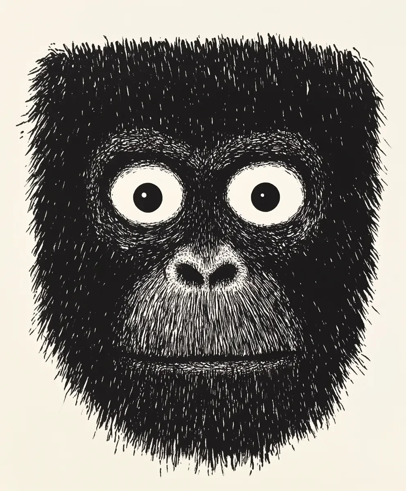

어머니는 항상 조심하지 않으면 얼굴이 그렇게 굳어버릴 거라고 말했었다. 하지만 이렇게 문자 그대로 맞아떨어질 줄은 몰랐다. 꼬꼬는 완벽하게 정상적인 얼굴로 태어났지만, 지나가던 큰부리새가 보여준 특별히 인상적인 마술(세 개의 열매와 아마도 날개 재주를 부린)을 목격한 후, 그의 얼굴은 영구적인 놀람 상태로 굳어버렸다.
[His mother had always told him his face would stick that way if he wasn’t careful. She didn’t expect to be quite so literally right. Little Koko had been born with a perfectly normal face, but after witnessing a particularly impressive magic trick by a passing hornbill (involving three berries and what might have been sleight-of-wing), his face froze in a permanent state of astonishment.]
보름달만큼이나 크고 밝은 그 커다란 눈은 그의 트레이드마크가 되었다. 그의 무리의 다른 원숭이들은 이미 오래 전에 그것에 익숙해졌지만, 새로 온 원숭이들은 종종 첫 며칠 동안 뭔가 굉장한 것을 놓치고 있다고 확신하며 미친 듯이 어깨 너머를 살펴보곤 했다. “뭐야? 무슨 일이야?"라며 빙글빙글 돌아다니는 동안 꼬꼬는 마치 우주의 탄생을 목격한 것 같은 표정으로 일상적인 일들을 해나갔다.
[Those enormous eyes, round as full moons and just as bright, became his defining feature. The other monkeys in his troop had long since gotten used to it, though newcomers often spent their first few days frantically looking over their shoulders, convinced they were missing something extraordinary. "What? What is it?” they’d ask, spinning in circles while Koko just went about his daily business, his expression suggesting he’d just witnessed the birth of the universe itself.]
잠자는 모습은 특히나 재미있었다. 다른 원숭이들의 얼굴은 늘어지고 평화로워지는 반면, 꼬꼬의 얼굴은 영원한 경이로움 속에 굳어있어서, 밤에 돌아다니는 동물들에게 마치 무언가 난처한 일을 하다 들킨 것 같은 불편한 느낌을 주었다. 한 마리가 아닌 여러 마리의 부엉이들이 그와 눈이 마주친 후에는 자신들이 뭔가 잘못을 저지른 것 같다고 확신하며 사냥 경로를 포기했다.
[Sleep was particularly amusing. While other monkeys’ faces went slack and peaceful, Koko’s remained frozen in perpetual wonder, giving night creatures the unsettling impression that they were being caught in the act of something embarrassing. More than one owl had abandoned its hunting route after locking eyes with him, convinced it had somehow offended the wide-eyed sentinel of the night.]